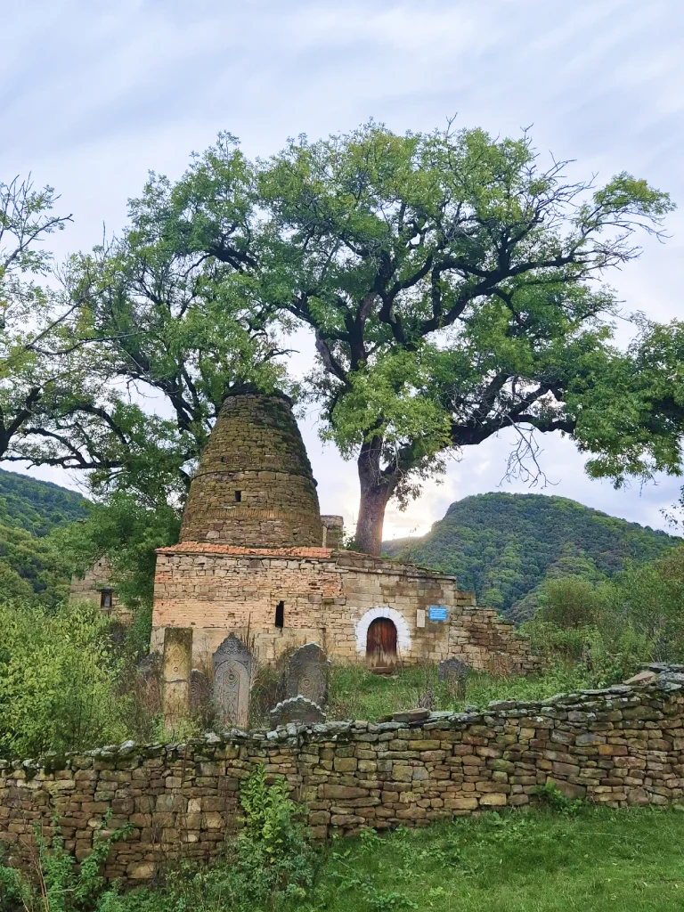
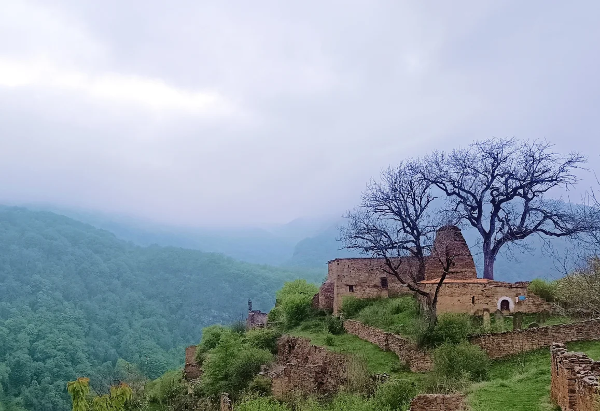
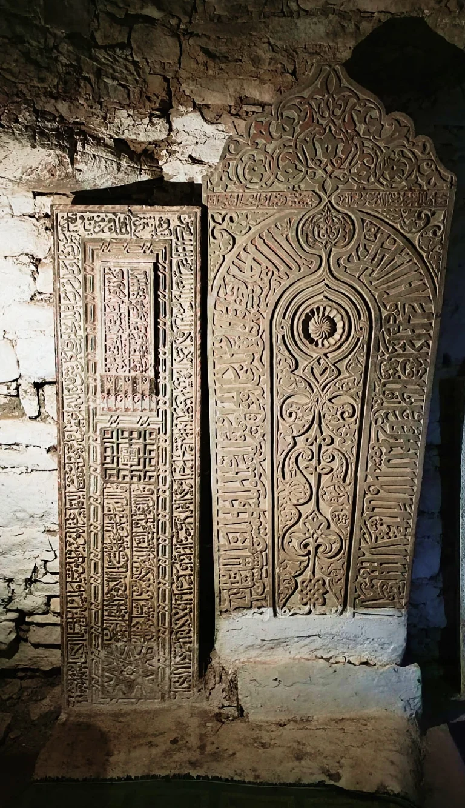

Кала - Корейш.
Кала-Корейш: где время остановилось на склонах горы.

Об этом месте много написано, но еще больше остается вопросов.
Само название этого государства настолько непривычно для слуха,что кажется выдуманным - Кайтагское Уцмийство.
Но все не так сложно.
Кайтаг
- это местность.
Уцмий
- это князь.
Много раз столица этого древнего государства меняло свое место, пока не обрела его на не преступной скале, со всех сторон окруженной реками.
Шамхал, уцмий, майсун- титулы древних правителей Дагестана, ставшие известными в более поздние времена, видимо, существовали в народе в иной транскрипции и являются названиями местного происхождения.
Р.М. Магомедов
Наверх ведет единственная узкая тропа. Вокруг не видно земли для огородов или пастбищ. Это крепость, в которой проживали войны правители возводившие свой род от пророка Мухаммеда - Курайшитов.

мавзолей кайтагских уцмиев
Стоит добавить, что несколько веков Кала-Корейш был одним из главных мест откуда шло распространение ислама на Кавказе.
Каким образом крепость без земли, пастбищ и огородов может существовать столетиями?
Ответ прост: если у вас по соседству находятся Кубачи и вы контролируете главную дорогу, то вам хватит денег, чтобы жить безбедно. Дело в том, что в средние века Кубачи само было столицей государства Зирихгеран и производило такое количество сверх дорогостоящих товаров, что могло прокормить еще и Кала-Корейш.

Само село не похоже ни на что. Мавзолей кайтагских уцмиев, сквозь крышу которого проросло дерево, впечатляет не меньше, чем тончайшая резьба надгробий правителей. По дороге разбросаны еле заметные могилы газиев и других легендарных личностей.
Время здесь остановилось в середине 20 века, но до сих пор летом вы можете встретить здесь хранителей этого памятника- прямых потомков кайтагских уцмиев. В 2016 году была проведена довольно редкая операция по спасению Кала- Корейш. Всё село полностью оцифровали и сделали доступным для виртуальной прогулки на сайте: https://artstudio-3d.ru/www-05/kala-koreish-fortress-village/ .
Меня лично больше всего поразили сложнейшие узоры надгробных памятников. Суры из Корана, вплетенные в мировое древо или опутанные виноградной лозой. Где-то между ними приведены стихи сирийских, египетских или андалузских поэтов.
Где тот, что был унижен и тот ,что был превознесен?
Господь- он тот ,кто создал нас безгрешными. Затем мы возвращаемся к нему с грехами.
Разве не подобен этот мир и все, что в нем, тени, что уходит с закатом солнца?
И самое лаконичное. Смерть- это дверь.
В этом месте обычно тихо и нет толп туристов, что располагает к неспешному созерцанию. При посещении Кала-Корейш помните, что это не только памятник федерального значения, но и мусульманская святыня, куда приходят верующие на зиярат и просто совершить молитву в этом атмосферном месте.
автор текста
Владимир Лис.